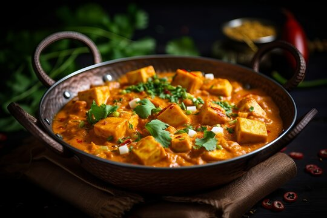

Kadhai Paneer Recipe

Description
Kadhai Paneer is a popular North Indian dish made with paneer (Indian cottage cheese), bell peppers, and a blend of freshly ground spices. The dish gets its name from the traditional Indian wok called "Kadhai," in which it is prepared. The vibrant flavors of spices and vegetables make it a great accompaniment to naan, roti, or rice.
Ingredients
- 200g Paneer (cubed)
- 1 Onion (sliced)
- 1 Tomato (chopped)
- 1 Green Bell Pepper (cubed)
- 1 Red Bell Pepper (cubed)
- 2 tsp Ginger-garlic paste
- 2 tsp Coriander seeds (crushed)
- 1 tsp Red chili powder
- 1 tsp Garam masala
- 1 tsp Cumin seeds
- 2 tbsp Oil or Ghee
- Fresh coriander leaves (for garnish)
- Salt (to taste)
- ½ cup Water
Steps
- Heat oil in a kadhai (or deep pan) and add cumin seeds. Let them splutter.
- Add the sliced onions and sauté until they turn golden brown.
- Add ginger-garlic paste and cook for a minute until the raw aroma disappears.
- Add chopped tomatoes and cook until they soften and blend with the onion mixture.
- Add the crushed coriander seeds, red chili powder, garam masala, and salt. Stir well.
- Add the cubed bell peppers and sauté for 3-4 minutes until they are slightly tender but still crunchy.
- Add the paneer cubes and gently stir to coat them with the masala.
- Add ½ cup of water and cook on low heat for 5-7 minutes, allowing the paneer to absorb the flavors.
- Garnish with fresh coriander leaves and serve hot with roti, naan, or rice.